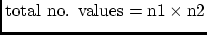

Next: How to Write an
Up: Answers to Frequently Asked
Previous: Technical Questions
Contents
This section addresses general questions about the SU package.
Question 19
What are these funny words gelev, selev, fldr, etc. that I see
in various places?
Answer 19
These are the "keywords" that are required for many of the codes.
They refer to SU (Segy) header fields.
Type: sukeyword -o to see the whole list
Type: sukeyword keyword to see the listing for an individual
keyword
Question 20
What do the terms ``little endian'' and ``big endian'' and mean?
Answer 20
There are two IEEE binary formats, called respectively
'little endian' and 'big endian'. These are also called
'high byte' and 'low byte', respectively.
These refer to the byte order in the bitwise representation of
binary data. The following platforms are 'little endian': DEC and
Intel-based PC's. The other common platforms are "big endian":
IBM RS6000, Silicon Graphics, NeXT (black hardware), SUN,
HP, PowerPC, any Motorola chip-based platform.
Question 21
Why are CWP/SU releases given by integers (22, 23, 24, etc...)
instead of the more familiar decimal release numbers (1.1, 1.3, etc...)?
Answer 21
The CWP/SU release numbers are chosen to correspond
to the SU NEWS email messages.
The individual codes in the package have traditional decimal
release numbers (assigned by RCS), but these are all different.
The package changes in incremental, but non-uniform ways, so the standard
notation seems inappropriate. However, the user may view 24 to be
2.4. We may adopt this convention in the future.
Remark: In the early days, we did use RCS to
simultaneously update all the codes to 2.1, 3.1, .... This
practice died a natural death somewhere along the way.
Question 22
How often are the codes updated?
Answer 22
The CWP/SU package is updated at roughly 3-6 month intervals.
We mail announcements of these releases to all known users. Since
we do not provide support for outdated versions, we urge you to remain current.
Question 23
I have a complicated collection of input parameters for a CWP/SU
program. I want to run the command from the command line of a terminal
window, but I don't want to retype the entire string of input parameters.
What do I do?
Answer 23
CWP/SU programs that take their input parameters from the command
line also have the feature of being able to read from a
``parameter file.'' This is invoked by setting
the parameter par=parfile, where parfile is a file containing
the desired commandline string.
For example:
suplane ntr=20 nt=40 dt=.001 | ...
is completely equivalent to the command:
suplane par=parfile | ...
if the string
ntr=20 nt=40 dt=.001
is contained in `parfile.'
Question 24
I can't find an sudoc entry for the function "ints8r," yet the
SU manual says that all library functions have online documentation?
What am I doing wrong?
Answer 24
The proper search procedure for a library function (such as ints8r) is:
% sufind ints8r
Which yields:
INTSINC8 - Functions to interpolate uniformly-sampled data via 8-coeff. sinc
approximations:
ints8c interpolation of a uniformly-sampled complex function y(x) via an
For more information type: "sudoc program_name <CR>"
The name INTSINC8 is the name of the file that contains the
library function ins8c. You may now use sudoc to find out more
information via:
% sudoc intsinc8
Which yields:
In /usr/local/cwp/src/cwp/lib:
INTSINC8 - Functions to interpolate uniformly-sampled data via 8-coeff. sinc
approximations:
ints8c interpolation of a uniformly-sampled complex function y(x) via an
8-coefficient sinc approximation.
ints8r Interpolation of a uniformly-sampled real function y(x) via a
table of 8-coefficient sinc approximations
Function Prototypes:
void ints8c (int nxin, float dxin, float fxin, complex yin[],
complex yinl, complex yinr, int nxout, float xout[], complex yout[]);
void ints8r (int nxin, float dxin, float fxin, float yin[],
float yinl, float yinr, int nxout, float xout[], float yout[]);
Input:
nxin number of x values at which y(x) is input
dxin x sampling interval for input y(x)
fxin x value of first sample input
yin array[nxin] of input y(x) values: yin[0] = y(fxin), etc.
yinl value used to extrapolate yin values to left of yin[0]
yinr value used to extrapolate yin values to right of yin[nxin-1]
nxout number of x values a which y(x) is output
xout array[nxout] of x values at which y(x) is output
Output:
yout array[nxout] of output y(x): yout[0] = y(xout[0]), etc.
Notes:
Because extrapolation of the input function y(x) is defined by the
left and right values yinl and yinr, the xout values are not restricted
to lie within the range of sample locations defined by nxin, dxin, and
fxin.
The maximum error for frequiencies less than 0.6 nyquist is less than
one percent.
Author: Dave Hale, Colorado School of Mines, 06/02/89
Question 25
I have written my own SU programs and would like them to appear
in the suname and sudoc listings. How do I do this?
Answer 25
Run updatedocall (source code located in CWPROOT/par/shell).
If you have put this code under a new path, then you must add
this path to the list of paths in the updatedoc script.
For the selfdoc information to be captured by the updatedoc script,
you will need to have the following marker lines at the beginning
and end of the selfdoc and additional information portion of the
source code of your program.
/*********************** self documentation **********************/
/**************** end self doc ********************************/
Be sure to clone these directly out of an existing SU program, rather
than typing them yourself, so that the pattern is the exact one
expected by the updatedoc script.
Question 26
I have a gray scale (not color) PostScript file made with psimage
and would like to convert it to a color PostScript format, but do
not have the original binary data that I made the file from. How
do I do this?
Answer 26
You have to restore the binary file to make the new color PostScript
file. Here is how you do it. (Here, we are assuming a bit-mapped
graphic as would be produced by psimage or supsimage).
- Make a backup of your PostScript file.
- edit the PostScript file removing everything but the
hexidecimal binary image that makes up the majority of
the file. (Note, in the line preceeding the hexidecimal data
portion of the file will be a pair of numbers that represents
the dimensions of the data. You will need these numbers for
later steps.)
- use h2b to convert the hexidecimal file to binary
- You will find that the file is flipped from the original
input file. Use transp to flip the data. Note that the
n1 and n2 values that are used by transp are the dimensions
of the input data, which are the reverse of the output data.
(The n1 value, is not the total number of samples, that
is returned by h2b, instead
.)
- You now have a 0-255 representation of your binary data
which you should be able to plot again any way you desire.
This method may be used to convert scanned images to SU format,
as well, with the next step in the procedure to be putting SU
headers on the data with suaddhead.
Next: How to Write an
Up: Answers to Frequently Asked
Previous: Technical Questions
Contents
John Stockwell
2007-04-10